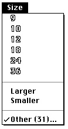

Legacy Document
Important: The information in this document is obsolete and should not be used for new development.
Important: The information in this document is obsolete and should not be used for new development.


Responding When the User Chooses a Menu Item
Your application can use theMenuSelectfunction to determine when the user chooses a menu command, and your application can use theMenuKeyfunction to determine when the user presses the keyboard equivalent for a menu command. BothMenuSelectandMenuKeyreturn a long integer value that indicates which menu and menu item the user chose.The
MenuSelectandMenuKeyfunctions return the menu ID of the menu in the high word and the menu item number in the low word of their function result. If the user did not choose a menu command or if the user pressed a keyboard combination that does not map to any keyboard equivalent in your application's menus, the functions return 0 in the high word and the value of the low word is undefined. TheMenuSelectfunction also returns 0 in the high word when the user selects an item in the Application or Keyboard menu. TheMenuSelectfunction (andMenuKeyfunction, if the command has a keyboard equivalent) returns thekHMHelpMenuIDconstant in the high word and the menu item in the low word when the user selects an item that your application appended to the Help menu.Listing 3-24 shows an application-defined procedure,
DoMenuCommand. This procedure takes the appropriate action based on which menu command the user chose.The
DoMenuCommandprocedure is called by the application after the application determines that either the user pressed the mouse button while the cursor was in the menu bar (in which case the application callsMenuSelectto allow the user to choose
a command) or the user pressed the Command key and another key (in which case the application calls theMenuKeyfunction). In either case, the application passes the function result returned byMenuSelectorMenuKeyas a parameter to theDoMenuCommandprocedure.Listing 3-24 Responding to the user's choice of a menu command
PROCEDURE DoMenuCommand (menuResult: LongInt); VAR menuID, menuItem: Integer; BEGIN menuID := HiWord(menuResult); {get menu ID of menu} menuItem := LoWord(menuResult); {get menu item number} CASE menuID OF mApple: MyHandleAppleCommand(menuItem); mFile: MyHandleFileCommand(menuItem); mEdit: MyHandleEditCommand(menuItem); mFont: MyHandleFontCommand(menuItem); mSize: MyHandleSizeCommand(menuItem); kHMHelpMenuID: MyHandleHelpCommand(menuItem); mOutline: MyHandleOutlineCommand(menuItem); mSubMenu: {user chose item from submenu} MyHandleSubLabelStyleCommand(menuItem); END; {end of CASE menuID} HiliteMenu(0); {unhighlight what MenuSelect or MenuKey hilited} END;TheDoMenuCommandprocedure calls other application-defined routines to perform the requested action. After performing the action associated with the chosen menu item, your application should use theHiliteMenuprocedure to unhighlight the menu title to indicate that the requested action is complete.Handling the Apple Menu
When the user chooses an item from the Apple menu, theMenuSelectfunction returns the menu ID of your application's Apple menu in the high word and returns the chosen menu item in the low word of its function result.If your application provides an About command as the first menu item in the Apple menu and the user chose this item, you should display your application's About box. Otherwise your application should use the
GetMenuItemTextprocedure to get the menu item text and then call theOpenDeskAccfunction, passing the text of the chosen menu item as a parameter.Listing 3-25 shows an application-defined procedure, MyHandleAppleCommand, that the application calls in response to the user's choice of an item from the Apple menu.
Listing 3-25 Responding to the user's choice of an item from the Apple menu
PROCEDURE MyHandleAppleCommand (menuItem: Integer); VAR itemName: Str255; daRefNum: Integer; BEGIN CASE menuItem OF iAbout: {bring up alert for About} DisplayMyAboutBox; OTHERWISE BEGIN {all non-About items in this menu are desktop items, } { for example, DA's, other apps, documents, etc.} GetMenuItemText(GetMenuHandle(mApple), menuItem, itemName); daRefNum := OpenDeskAcc(itemName); END; END; {of CASE} END;When the user chooses an item other than your application's About command from
the Apple menu, your application should call theOpenDeskAccfunction. TheOpenDeskAccfunction prepares to open the desktop object chosen by the user; for example, if the user chose a document created by the TeachText application, theOpenDeskAccfunction schedules the TeachText application for execution (or prepares to open it if it isn't already open) and returns to your application. On your application's next call toWaitNextEvent, your application receives a suspend event, and then
the Process Manager makes TeachText the foreground application and instructs TeachText to open the chosen document.Handling the Help Menu
Both theMenuSelectandMenuKeyfunctions return thekHMHelpMenuIDconstant (-16490) in the high word when the user chooses an appended item from the Help
menu. The item number of the appended menu item is returned in the low word of the function result.The
DoMenuCommandprocedure shown in Listing 3-24 determines which menu command was chosen by the user. If the user chose a command from the Help menu,
theDoMenuCommandprocedure calls the application-defined procedureMyHandleHelpCommand. Listing 3-26 shows the application-defined procedureMyHandleHelpCommand. This procedure illustrates how the SurfWriter application responds to the user's choice of an item from the application's Help menu. Note that
you should use the HMGetHelpMenuHandle function, not theGetMenuHandlefunction, to get a handle to your application's Help menu.Listing 3-26 Responding to the user's choice of a command from the Help menu
PROCEDURE MyHandleHelpCommand (menuItem: Integer); VAR myHelpMenuHdl: MenuHandle; origHelpItems, numItems: Integer; myErr: OSErr; BEGIN {get handle to your application's Help menu} myErr := HMGetHelpMenuHandle(myHelpMenuHdl); IF myErr <> noErr THEN EXIT(MyHandleHelpCommand); {count the number of items in the Help menu} numItems := CountMItems(myHelpMenuHdl); origHelpItems := numItems - kNumMyHelpItems; IF menuItem > origHelpItems THEN BEGIN {user chose an item added by this application} {adjust this application's global variables that hold item } { numbers of the menu items that this application appended} gMyHelpItem1 := origHelpItems +1; gMyHelpItem2 := origHelpItems +2; MyHelp(menuItem); END; END;Apple reserves the right to change the number of standard items in the Help menu. To determine the number of items in the Help menu, call theCountMItemsfunction.Handling a Size Menu
Your application can provide a Size menu to let the user choose various sizes of a font. Your Size menu should also provide the user with a method for specifying a size that isn't currently listed in the menu. For example, you can choose to provide an Other command that displays a dialog box allowing the user to choose a different font size. If the user chooses a font size not already in the menu, add a checkmark to the Other menu command and add the chosen size in parentheses to the text of the Other command.Your application should outline font sizes to indicate which sizes are directly provided by the current font. For bitmapped fonts, outline only those sizes that actually exist in the Fonts folder. For TrueType fonts, outline all sizes that the TrueType font supports.
Your application should indicate the current font size to the user by placing a checkmark next to the text of the menu item that lists the current font size. If the current selection contains more than one font size, place a dash next to the name of each font size that the selection contains. ("Changing the Mark of Menu Items" on page 3-63 explains how to add marks to and remove marks from menu items.)
Figure 3-35 shows a Size menu as it appears after the user chooses a new font size of 31 by using the Other command. In Figure 3-35 the sizes 9, 10, 12, 18, 24, and 36 are the standard sizes provided by the application. Your application should place a checkmark next to the Other command to indicate that the current font size is a size other than a standard size. If the selection contains only one nonstandard size, include the size of the font in parentheses following the text Other. In Figure 3-35 the current selection contains a nonstandard size of 31, so the application places the checkmark next to the Other command and includes 31 in parentheses following the Other text. If the selection contains multiple nonstandard sizes, include the text Mixed in parentheses following
the word Other. If the selection contains one or more standard sizes and only one nonstandard size, place a dash next to each standard size that the selection contains
and place a dash next to the Other command with the nonstandard size included in paretheses in the text of the Other command.Figure 3-35 A Size menu with user-specified size added

When the user chooses the Other command, you should display the current font size in a dialog box and allow the user to choose a new size. Figure 3-16 on page 3-33 shows a sample dialog box an application might display in response to the user's choice of the Other command.
You should always specify the text of the Other command in the plain font style (as shown in Figure 3-35) and never outlined, regardless of whether the current font is a TrueType font that supports that size or a bitmapped font that exists at that size in the Fonts folder.
Listing 3-27 shows an application-defined procedure that handles the user's choice of an item in the Size menu shown in Figure 3-35.
Listing 3-27 Handling the Size menu
PROCEDURE MyHandleSizeCommand (menuItem: Integer); VAR numItems: Integer; addItem: Boolean; itemString: Str255; itemStyle: Style; sizeChosen: LongInt; BEGIN numItems := CountMItems(GetMenuHandle(mSize)); IF menuItem = numItems THEN BEGIN {user chose Other command} {display a dialog box to allow the user to choose any } { size. If the user-specified size is not in the menu, } { add a checkmark to the Other command and add the } { new font size to the text of the Other command} MyDisplayOtherBox(sizeChosen); END ELSE BEGIN IF (menuItem = (numItems -2)) OR (menuItem = (numItems -3)) THEN DoMakeLargerOrSmaller(menuItem, sizeChosen) ELSE BEGIN {user chose size displayed in the menu} {remove checkmark or dashes from menu items showing } { previous size} MyRemoveMarksFromSizeMenu; {add checkmark to menu item of new current size} CheckItem(GetMenuHandle(mSize), menuItem, TRUE); sizeChosen := MyItemToSize(menuItem); END; END; {update the document's state or the user's selection as needed} MyResizeSelection(sizeChosen); END;If the user chooses an item from the Size menu, the MyHandleSizeCommand procedure first counts the current number of items in the menu. If the user chooses the last item in the menu (the Other command), the procedure displays a dialog box like the one shown in Figure 3-16 on page 3-33 to let the user choose a size other than the ones currently shown in the menu. The application-defined function MyDisplayOtherBox also adds a checkmark to the Other command if the user chose a new size, adds the new size to the text of the Other command, and returns the chosen size in the sizeChosen variable.If the user chose the Larger or Smaller command from the Size menu, the code calls an application-defined routine, DoMakeLargerOrSmaller, to perform the requested action. The DoMakeLargerOrSmaller procedure also adds a checkmark and adds the new size to the text of the Other command if the new size does not match any size in
the menu. The procedure returns the chosen size in the sizeChosen variable.If the user chose any size currently displayed in the menu, the MyHandleSizeCommand procedure adjusts the marking character of the menu items appropriately. The code removes the checkmark from the previous menu item and adds a checkmark to the menu item representing the new size chosen by the user. The code uses an application-defined function, MyItemToSize, to map the item number of the chosen menu item to a given size and returns this size in the sizeChosen variable.
The code then uses the application-defined procedure
MyResizeSelectionto update the document's state and resize the user's selection, if any, to the chosen size.